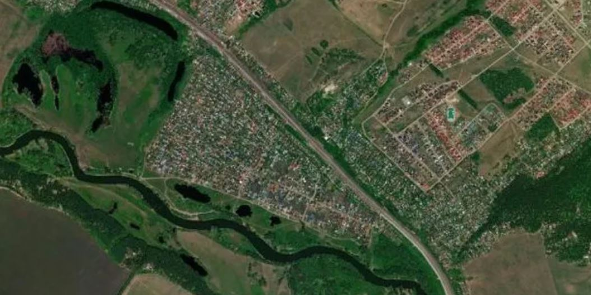
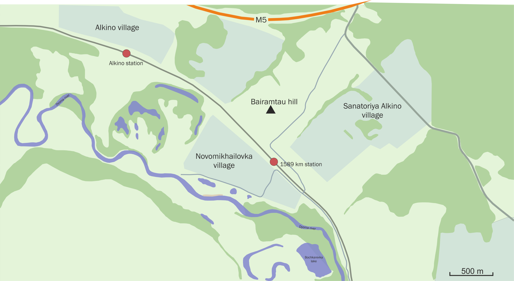
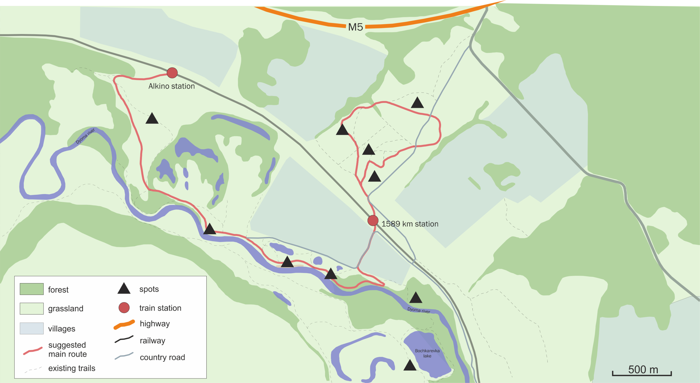
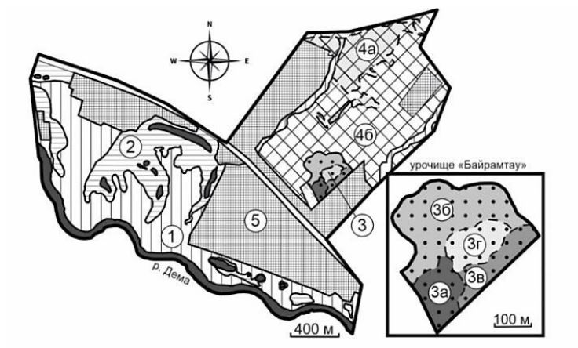
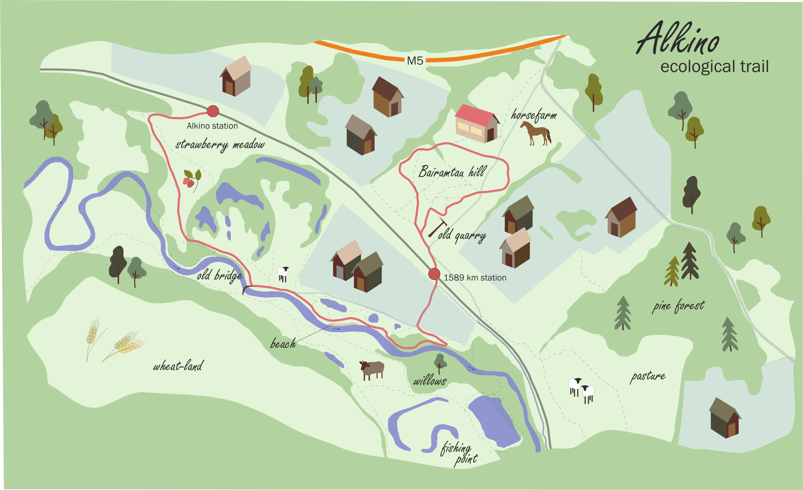

Ecological survey for an eco-trail
The region is a scientifically valuable as some of landscapes and plant complexes are unique. That is why I got an idea to create a ecological trail of not only beautiful views and activities, but also an educational option. Just for my own pleasure, I decided to develop a creative map of a route that I could propose to visitors. First of all, I took a very simple and ordinary satellite image Link to the GIS project.
Using it as a basemap, I outlined forest, grassland, villages and roads that may be used to drive to the area of interest. My concept focuses on Bairamtau hill, as it was called in Aksakov's memoirs. The top of the hill provides a good viewpoint.
Then I marked sightseeing spots and drew a route through them, so that it could cover the most different landscapes.
One significant problem for me was the lack of a bridge to cross the river. The south bank is very beautiful, although it is not connected with the main part of the territory. The bridge in Novomikhailovka village was ruined in 1999 (or even earlier), so since then the closest way to get to the south bank is the bridge in Bochkarevka village (not in the picture) in 4500 m down the river. However, the old bridge piers of Novomikhailovka still stand safe and sound (more or less). So I decided to dream a little bit and imagine that this bridge is already reconstructed. In such case, other spots may be added to the route map. Afterwards, I needed just to add some design features to the map. For that I used Adobe Illustrator. Here I wanted to emphasize in which point you can find particular activity.
In advance, a landscape map of the area was created to justify the decisions made (more information can be found in my article at the link). As a result, we can observe our beautiful scheme below.
